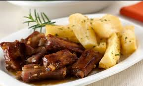
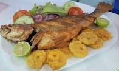
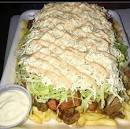

Mi comida favorita
Tengo varias comidas favoritas y en mi region hay distinción.
Chivo con yuca: Es una comida tipica de la costa lo cual es un
chivo sancochado con la yuca igual de sancochada.

Reseta de chivo con yuca
- acá puedes ver la reseta de como hacer el chivo con yuca.
Pescado frito: El pescado frito es una comida deliciosa que se
puede acompañar con patacones, papa, yuca y mas verdura.

Reseta pescado con patacon.
- acá puedes ver la reseta para hacer el pescado con patacon.
Salchipapa costeña: Es muy conocida a nivel nacional, esta comida
lleva papa, salchicha, queso y otro productos que lo hacen delicioso para
el paladar.

Reseta salchipapa costeña
- acá puedes ver la reseta para hacer la salchipapa costeña.